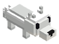
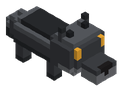

Bestiario › Fauna



Variantes de color
Lobo
Defensivo Cuadrúpedo Fauna
Lobo gris de hocico y vientre claros; caza en manada.
1Nivel
19Vida
6,7Daño
0Armadura
0,5Regeneración
5,5Velocidad
Dónde aparece
| Biomas | Bosque, Tierras nevadas, Montaña |
|---|---|
| Horas | de 19:00 a 6:00 |
| Grupo | 3 |
Efectos de sus ataques
- Sangrado · 20 % · 3 s (al golpear)
Doma
| Comida favorita |  Carne cruda Carne cruda |
|---|---|
| Bocados para domar | 3 |
Cómo se doma: Mascotas y monturas.
Botín
| Objeto | Cantidad | Probabilidad |
|---|---|---|
 Cuero Cuero | 1 | 80 % |
Archivo de datos: mods/mobs/wolf.json · tamaño del vóxel 0,1 m · cuerpo de 0,7 × 0,9 bloques